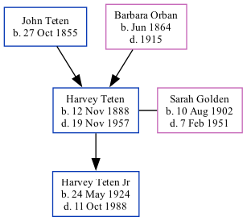

Harvey Henry Teten 1888 - 1957
[ Home ] | [ Surnames Index ] | [ Family History ]The child of John Teten and Barbara Orban, , Harvey was the great-grandfather of Stephanie Hardesty (née Teten), was born in Nebraska City, Otoe, Nebraska, USA on Nov 12, 18881,2,3,4,5 and married Sarah Golden (with whom he had 1 child, Harvey H. Jr) in Glenwood, Mills, Iowa, USA on Sep 30, 1923.
During his life, he was living in Nebraska City Ward 4, Otoe, Nebraska in 19001 and in 19102; in Nebraska Ward 4, Otoe, Nebraska in 19203; in Nebraska City, Otoe, Nebraska in 19304; and in Otoe5.
He died on Nov 19, 1957 in Nebraska City.
Parents
- John J was born on Oct 27, 1855
- Barbara was born in Jun 1864
Children
- Harvey H. Jr was born on May 24, 1924
Citations
- 1900 United States Federal Census Ancestry.com Operations Inc (Age: 12; Marital Status: Single; Relation to Head of House: Son)
- 1910 United States Federal Census Ancestry.com Operations Inc (Age in 1910: 22; Marital Status: Single; Relation to Head of House: Son)
- 1920 United States Federal Census Ancestry.com Operations Inc (Age: 31; Marital Status: Single; Relation to Head of House: Son)
- 1930 United States Federal Census Ancestry.com Operations Inc (Age: 42; Marital Status: Married; Relation to Head of House: Head)
- U.S., World War I Draft Registration Cards, 1917-1918 Ancestry.com Operations Inc
Family Tree
Data (GEDCOM) maintained by Jay Weston Hannah, Omaha, Nebraska, USA.
Website generated by ged2site. Last updated on Jun 18, 2024.